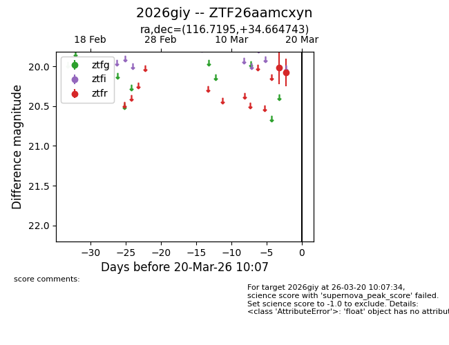
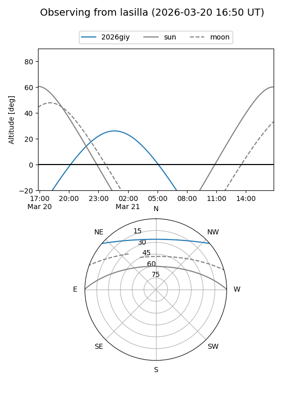
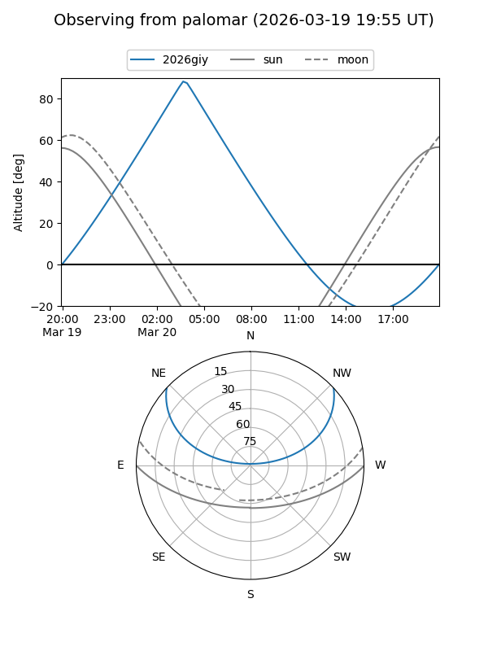

2026giy
Target 2026giy at 2026-03-20 10:09
Aliases and brokers:
FINK: link
Lasair: link
ALeRCE: link
TNS: link
YSE: link
alt names
ZTF26aamcxyn (ztf,fink_ztf)
2026giy (tns,yse)
Coordinates:
equatorial (ra, dec) = 116.7195,+34.66474
equatorial (HMS+DMS) = 07:46:52.68,+34:39:53.07
galactic (l, b) = (185.3945,+25.76651)
Flags:
Photometry:
last ztfr=20.08
2 ztfr detections
Lightcurve

Visibility


Additional plots